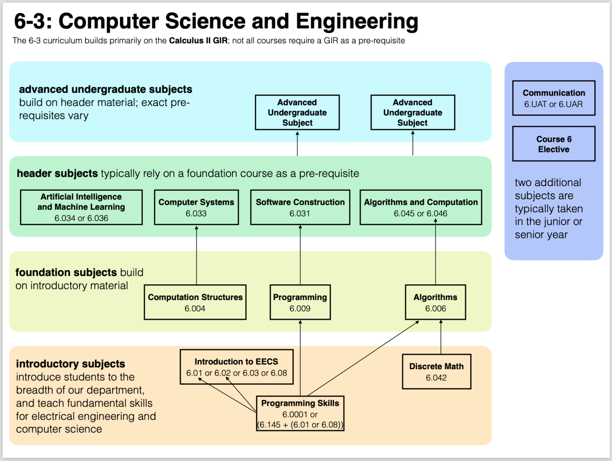

MIT 计算机科学与工程
麻省理工MIT既是世界顶级名校，在计算机方面也是四大CS名校之一。它的计算机专业隶属于电子工程与计算机学院Electrical Engineering and Computer Science。由于MIT在开放课程上一直做得比较优秀，Syllabus课程表、Readings教材与参考资料、Slides课件、Code代码、video课程视频以及Lab实验课等等都十分齐全，因此十分推荐大家学习MIT CS的课程。
课程说明
说明
MIT很多课程几年就更新一次，可以尽可能选择最新的，我在整理的过程中也会尽量把最新的开放课程放在课程地址的最前面。有些课程标有“sc”，如“6.00SC”，这个指的是专门为公开课提供的自学课程
MIT 计算机相关的专业有两个，电气工程和计算机科学（Electrical Engineering and Computer Science，EECS）以及计算机科学工程（Computer Science and Engineering，CSE），本学习路线只以CSE为主。
注意
相比于EECS，CSE不需要学习电路与电子，信号处理，信号、系统和推断，电磁波与应用，电磁场、力和运动，纳米电子系和计算系统等课程。国内不少计算机专业由于EECS和CSE没有严格区分，导致不少计算机专业仍然需要学习大量EE相关的课程，即便是强如MIT的计算机专业CSE也对EE部分没有要求，所以不推荐国内计算机专业的学生学习大学物理、电子等EE课程。
课程体系
以下是MIT 计算机科学与工程专业本科的课程学习路线图，非常详细的列出了该专业本科毕业生应该学习哪些课程，课程分为导论课、基础课、头部课和进阶课。

必修推荐课程
① 6.0001 Python计算机科学编程导论
为很少或没有编程经验的学生介绍计算机科学和编程。培养学生编程和使用计算技术解决问题的技能。主题包括计算、Python、简单算法和数据结构、测试和调试以及算法复杂性的概念。建议和6.0002计算思维和数据科学导论一起学习。
先修课程： 零基础可学，无先修课程
学习地址： 6.0001 Python计算机科学编程导论
② 6.042 计算机科学中的数学
用于科学和工程的基本离散数学，重点是在计算机科学中有用的数学工具和证明技术。主题包括逻辑符号、集合、关系、基本图论、状态机和不变量、矛盾归纳和证明、递归、渐近符号、算法的基本分析、基本数论和密码学、排列和组合、计数工具和离散概率.
先修课程： MIT 18.01 单变量微积分
学习地址： 6.042 计算机科学中的数学
③ 6.004 计算架构
介绍了数字系统和计算机体系结构的设计。强调用高级硬件语言表达所有硬件设计并综合设计。主题包括组合和时序电路、可编程硬件的指令集抽象、单周期和流水线处理器实现、多级内存层次结构、虚拟内存、异常和 I/O 以及并行系统。
先修课程： 大学物理 II （这里就不介绍了）以及6.0001 Python计算机科学编程导论
学习地址： 6.004 计算架构
④ 6.006 算法概论
介绍计算问题的数学建模，以及用于解决这些问题的常用算法、算法范式和数据结构。强调算法和编程之间的关系，并介绍这些问题的基本性能测量和分析技术。注册可能会受到限制。
先修课程： 6.042 计算机科学中的数学、6.0001 Python计算机科学编程导论、6.009 编程基础
学习地址： 6.006 算法概论
⑤ 6.009 编程基础
介绍编程的基本概念。旨在培养将基本方法从编程语言应用于抽象问题的技能。主题包括编程和 Python 基础、计算概念、软件工程、算法技术、数据类型和递归。实验室组件包括软件设计、构建和设计实施。注册可能会受到限制。
先修课程： 6.0001 Python计算机科学编程导论
学习地址： 6.009 编程基础
⑥ 6.031 软件构建要素
介绍了软件开发的基本原则和技术：如何编写没有错误、易于理解和随时可以更改的软件。主题包括规范和不变量；测试、测试用例生成和覆盖；抽象数据类型和表示独立性；面向对象编程的设计模式；并发编程，包括消息传递和共享内存并发，以及防止竞争和死锁；以及具有不可变数据和高阶函数的函数式编程。包括每周编程练习和更大的小组编程项目。
先修课程： 6.009 编程基础
学习地址： 6.031 软件构建要素
⑦ 6.033 计算机系统工程
计算机软件和硬件系统工程的主题：控制复杂性的技术；使用客户端-服务器设计、操作系统的强大模块化；性能、网络；命名；安全和隐私；容错系统、并发活动的原子性和协调性以及恢复；计算机系统对社会的影响。工作系统的案例研究和当前文献中的读物提供了比较和对比。包括一个为期一学期的设计项目。学生进行广泛的书面交流练习。注册可能会受到限制。
先修课程： 6.004 计算架构、6.009 编程基础
学习地址： 6.033 计算机系统工程
⑧ 6.046 算法设计与分析
设计和分析有效算法的技术，强调在实践中有用的方法。主题包括排序；搜索树、堆和散列；分而治之；动态规划；贪心算法；摊销分析；图算法；和最短路径。高级主题可能包括网络流；计算几何；数论算法；多项式和矩阵计算；缓存；和并行计算。
先修课程： 6.006 算法概论
学习地址： 6.046 算法设计与分析
进阶推荐课程
① 6.824 分布式系统
本课程介绍分布式系统设计的抽象和实现技术。主题包括：服务器设计、网络编程、命名、存储系统、安全性和容错能力。
先修课程： 6.033 计算机系统工程
学习地址： 6.824 分布式系统
② 6.828 操作系统工程
操作系统工程中的基本设计和实现问题。讲座基于对 UNIX 版本 6 的对称多处理器版本和研究论文的研究。主题包括虚拟内存；文件系统; 线程；上下文切换；内核；中断；系统调用；进程间通信；软件和硬件之间的协调和交互。个人实验室任务累积在最小操作系统（用于基于 x86 的个人计算机）的构建中，该操作系统实现了基本的操作系统抽象和外壳。具备 C 语言编程知识是先决条件。
先修课程： 6.031 软件构建要素、6.033 计算机系统工程
学习地址： 6.828 操作系统工程
③ 6.829 计算机网络
关于网络协议和架构的工程和分析的主题，包括设计异构网络的架构原则；传输协议；互联网路由；路由器设计；拥塞控制和网络资源管理；无线网络; 网络安全; 命名；覆盖和对等网络。原始研究论文的读数。为期一个学期的项目和论文。
先修课程： 6.033 计算机系统工程
学习地址： 6.829 计算机网络
④ 6.830 数据库系统
与数据库系统的工程和设计相关的主题，包括数据模型；数据库和模式设计；模式规范化和完整性约束；查询处理；查询优化和成本估算；交易；恢复; 并发控制；隔离和一致性；分布式、并行和异构数据库；自适应数据库；触发系统；发布-订阅系统；半结构化数据和 XML 查询。
先修课程： 6.033 计算机系统工程、6.006 算法概论、6.046 算法设计与分析
学习地址： 6.830 数据库系统